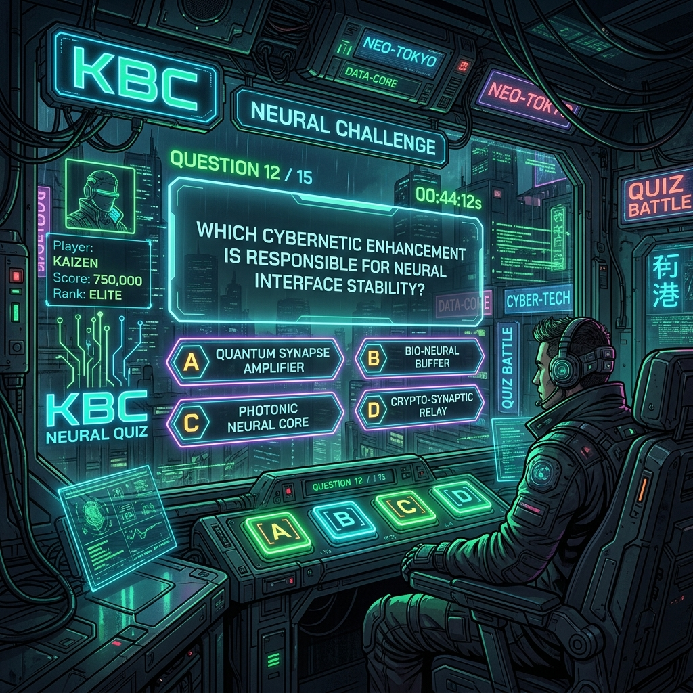

Mini KBC Quiz Game
Console-based quiz inspired by Kaun Banega Crorepati. Features lifelines, scoring, and multiple rounds implemented in Python. Focused on logic and user interaction.
VIEW_SOURCE
Console-based quiz inspired by Kaun Banega Crorepati. Features lifelines, scoring, and multiple rounds implemented in Python. Focused on logic and user interaction.
VIEW_SOURCEThis premium cyber-themed portfolio — responsive, accessible, and built with modern CSS and vanilla JS. Features dark mode and interactive terminal effects.
GITHUB_RECON